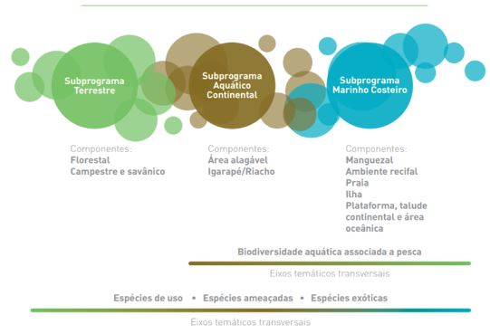

1 O Programa Nacional de Monitoramento da Biodiversidade - Programa Monitora
Dárlison Fernandes Carvalho de Andrade1-2 & Rodrigo Pinto Silva Jorge1
Coordenação de Monitoramento da Biodiversidade - COMOB
Instituto Chico Mendes de Conservação da Biodiversidade – ICMBio
Complexo Administrativo EQSW 103/104 s/n
70670-350 Brasília, DFServiço Florestal Brasileiro - SBF
SCEN Lote 04 - Asa Norte
70818-900 Brasília, DF
1.1 Impacto do Programa Monitora no desenvolvimento do conhecimento
O Brasil é um dos países com maior dimensão e biodiversidade do planeta ([Mittermeier2005?]), responsável por 15-20% da biodiversidade mundial ([CBD2022?]), e abriga um dos maiores sistemas de áreas protegidas do mundo ([Roque2018?]). O Instituto Chico Mendes de Conservação da Biodiversidade (ICMBio) é o órgão governamental responsável pela gestão das 334 unidades de conservação (UCs) federais do Brasil, que cobrem 10% do território continental brasileiro e 26% do território marinho. Muitos estudos têm mostrado os efeitos positivos das UCs na conservação de espécies e paisagens ([Blanco2020?]), sendo importantes para reduzir a perda de habitats ([Jusys2016?], [Jusys2016a?], [Shah2021?]) e a extinção de espécies ([Butchart2012?]). A Lei n. 11.516/2007, que dispõe sobre a criação do ICMBio, em seu artigo primeiro prevê, dentre as suas finalidades, que cabe ao Instituto executar ações da política nacional de unidades de conservação da natureza, referentes às atribuições federais relativas ao monitoramento das unidades de conservação instituídas pela União, assim como fomentar e desenvolver programas de pesquisa sobre a biodiversidade.
O ICMBio executa o monitoramento da biodiversidade por meio de um Programa contínuo de aferição de indicadores (alvos) do estado de conservação do ecossistema monitorados. Esse esforço sistemático, ao longo do tempo, permite avaliações que sugerem a necessidade, ou não, de medidas por parte do ICMBio. O monitoramento busca respostas para questões simples no longo prazo que, em suma, referem-se a: “o comportamento numérico deste indicador (alvo), do início de sua aferição até os dias atuais, sugere a necessidade de uma ou mais ações”? Por outro lado, a pesquisa, que também é programática, desenvolve-se por meio de projetos com início, meio e fim, a curto prazo. No ICMBio, a pesquisa fomentada pela instituição busca responder questões difusas, que aportem subsídios à tomada de decisão, sob a diretriz de não haver sobreposição com projetos de interesse acadêmico. Existe uma intersecção do monitoramento com a pesquisa, à medida que um subsidia o outro. O Programa de Monitoramento pode ensejar pesquisas assim como os projetos de pesquisa desenvolvidos podem suscitar demandas de monitoramento.
Conforme disposto em seu regimento interno (Portaria ICMBio nº 1.270/2022), compete ao Instituto Chico Mendes, ainda, em âmbito federal, “fomentar, coordenar e executar programas de pesquisa científica aplicada à gestão e ao desenvolvimento sustentável nas unidades de conservação federais e à conservação da biodiversidade” e “desenvolver programa de monitoramento da biodiversidade para subsidiar a definição e a implementação de ações de adaptação às mudanças climáticas nas unidades de conservação federais e a análise da efetividade”. Com vistas a nortear a pesquisa e a gestão do conhecimento no ICMBio, bem como relacionar as estratégias de pesquisa com as estratégias de conservação da biodiversidade, foi instituído e tem sido implementado o Plano Estratégico de Pesquisa e Gestão do Conhecimento do ICMBio (PEP-ICMBio), o qual traz uma priorização dos conhecimentos-chave para subsidiar as estratégias de conservação conduzidas pelo ICMBio em escala nacional (Portaria ICMBio nº 804/2018).
Além do histórico positivo de estruturação da estratégia de fomento e apoio a pesquisa científica nas unidades de conservação, o ICMBio também se tornou uma referência no monitoramento da biodiversidade ao instituir, em 2017, o Programa Nacional de Monitoramento da Biodiversidade (Monitora) em unidades de conservação federais, iniciativa que utiliza protocolos padronizados de coletas de dados para gerar informações biológicas necessárias à gestão e proposição de medidas adequadas para a conservação dos ambientes monitorados. Os programas de monitoramento da biodiversidade são fundamentais para acompanhar o estado dos ecossistemas alvo, espécies ou processos naturais e fornecer informações baseadas em evidências sobre a resposta dos alvos às mudanças ambientais e ações de manejo ([Lindenmayer2009?], Lovett2007). Em um contexto de complexidade social e crise econômica endêmica, a pressão sobre as áreas protegidas é elevada, resultando inclusive em sua redução ([Bernard2014?]). O Programa Monitora é, portanto, um programa governamental de larga escala, contínuo e de longo prazo, voltado para o monitoramento do estado da biodiversidade e dos serviços ecossistêmicos associados, realizado em UCs administradas pelo ICMBio com o apoio de diversos parceiros. Além de ser um instrumento de avaliação da efetividade das UCs na conservação biológica, é, também, útil ao planejamento e gestão de UCs, proteção de espécies ameaçadas e manejo sustentável da fauna e flora (Monitora, 2018). O Programa Monitora foi concebido a partir de um longo processo iniciado em 2010, envolvendo centenas de instituições, entre pesquisadores, gestores de unidades de conservação, usuários e beneficiários de UCs, como povos tradicionais. Foi construído a partir de um conjunto de lições aprendidas, elaboradas por outras iniciativas de monitoramento ([Monitora2018?], [Souza2019?]).
Para abranger os principais ecossistemas brasileiros, o Programa Monitora é dividido em três subprogramas: Terrestre, Aquático Continental e o Marinho e Costeiro, cada um deles subdividido em componentes que compartilham protocolos padronizados para 21 alvos de monitoramento. Atualmente, 113 UCs participam do Programa Monitora (Figura 1.1). Espécies ameaçadas, invasoras e exploradas representam temas transversais monitorados em todos os subprogramas.
O Programa Monitora possui estrutura modular, o que permite implementação gradativa, com complexidade crescente considerando protocolos e desenhos de amostragem. O primeiro nível de complexidade, que é o monitoramento mais básico a ser implementado, é também o mais importante porque pretende ser um programa de monitoramento extenso, através de uma grande extensão espacial com poucos alvos de monitoramento, reunindo informações sobre tendências na abundância e distribuição das espécies ([Lindenmayer2010?], [Proenca2017?]).